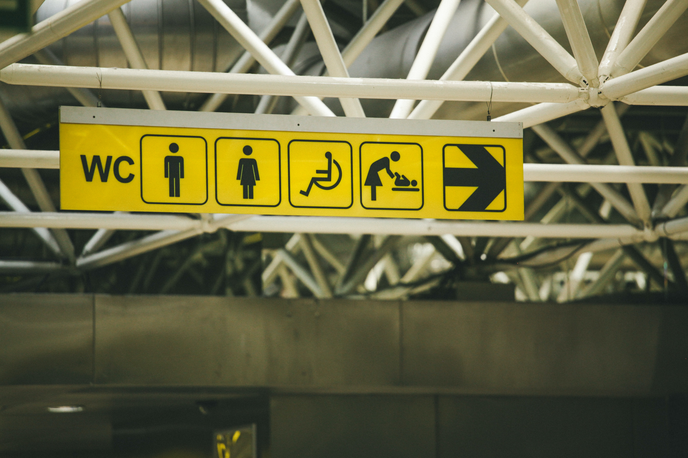
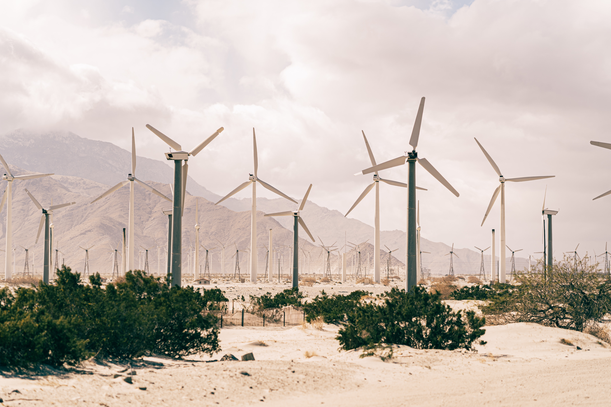

Beneficios.
Comodidad.
La comodidad es una de las razones más importantes por las que las personas construyen y compran casas inteligentes. Estas casas brindan a sus usuarios acceso remoto a todos los sistemas y equipos que forman parte de las instalaciones incluyendo calefacción y refrigeración, ventilación, intercomunicadores, música y dispositivos multimedia en toda la casa.
Seguridad.

Las casas inteligentes incluyen sistemas de seguridad avanzados con cámaras, sensores de movimiento y en algunos casos, un enlace a la estación de policía local o una compañía de seguridad privada. Las casas inteligentes también pueden usar tarjetas de acceso o identificación de huellas dactilares en lugar de cerraduras convencionales, lo que dificulta la entrada de cualquier persona ajena a la vivienda.
Mayor accesibilidad.
Para los residentes ancianos o discapacitados, una casa inteligente puede contar con tecnologías de accesibilidad. Los sistemas de comando por voz pueden controlar luces, cerrar puertas, operar un teléfono o usar una computadora. La automatización del hogar permite que una persona establezca un horario para las tareas automáticas, como regar el césped, eliminando la necesidad de realizar estas tareas que requieren mucha mano de obra de forma regular.
Eficiencia energética.
Las casas inteligentes ofrecen una mayor eficiencia energética. Los sistemas de iluminación de una estancia o habitación pueden controlarse de forma automática para su encendido y apagado mediante detectores de presencia y los sistemas de climatización pueden dirigirse o programarse de forma automática o remota en función de las necesidades y confort de los usuarios de la vivienda.
Existen además hoy en día, sistemas de demanda controlada de ventilación y/o de recuperación de calor de diseñados para proporcionar a los ocupantes de una vivienda o edificio la cantidad adecuada de caudal de aire cuando y donde sea necesario de forma automática, contribuyendo mantener un ambiente de mayor salubridad del ambiente interior controlando el consumo de energía.
Todas estas funciones automatizadas, junto con los electrodomésticos modernos y energéticamente eficientes, se combinan para ahorrar electricidad, agua y gas natural, lo que reduce la presión sobre los recursos naturales y reducen considerablemente las facturas energéticas.
Valor del inmueble.
Las casas domóticas con sistemas inteligentes y automatizados cuentan con un mayor valor en el mercado con respecto a las viviendas construidas de forma convencional.
Habitualmente este tipo de casas inteligentes disponen de certificaciones energéticas superiores gracias a los sistemas más avanzados en climatización y ventilación y en muchos casos se trata de inmuebles que disponen además de certificados de construcción sostenible (BREEAM, LEED, etc.) que garantizan que estas viviendas han sido diseñadas, construidas y reformadas en base a unos mínimos criterios relacionados con la sostenibilidad, la eficiencia y el ahorro de energía.